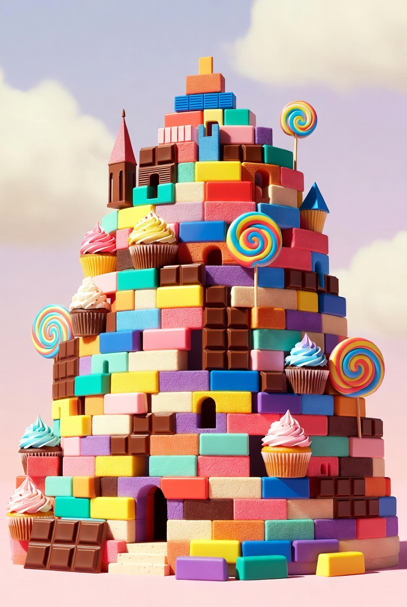

Flow 3 – Interaktiv frontend
I dette flow udviklede jeg Babel Slik, en interaktiv slikbutik hvor brugeren kan bygge sit eget sliktaarn. Projektet kombinerer HTML, CSS og JavaScript med fokus paa interaktion og tydelig feedback.

Funktioner
Brugeren kan vælge produkter, bygge et taarn lag for lag og følge prisberegningen undervejs. JavaScript styrer produktvalg, spil-logik og opdatering af indholdet.
Design og udvikling
Jeg arbejdede med farver, typografi, kort og knapper, så den visuelle stil understøtter den legende brugeroplevelse. Layoutet er bygget responsivt, så løsningen fungerer paa forskellige skærmstørrelser.
Hvad jeg lærte
Flowet styrkede mine evner inden for DOM-manipulation, events, betingelser og strukturering af en interaktiv frontend.